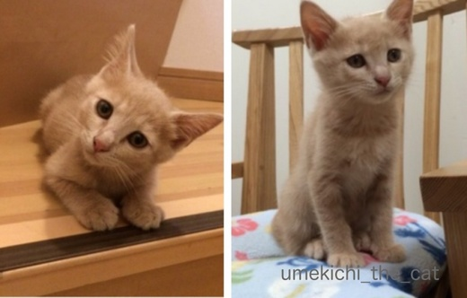
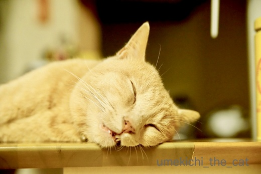
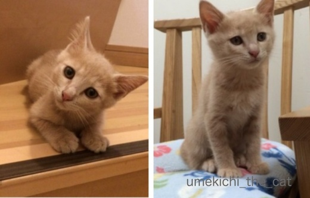
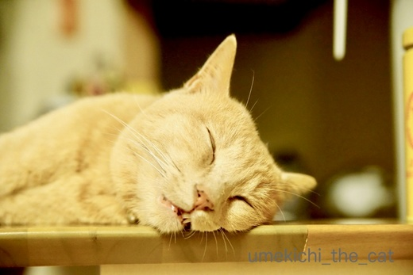

３回目のうちの子記念日＆ブログ２周年 [梅吉]
今日、7月26日は梅吉の３回目のうちの子記念日です![[ぴかぴか（新しい）]](https://blog.ss-blog.jp/_images_e/150.gif)

ブログ初公開画像！！
梅吉の里親募集の記事写真です。
一時預かりのお宅で撮られた梅吉の小太郎くん時代の写真＾＾
あどけないというか、なんだか困ったような顔。
募集記事のコメントにも
「いつも困ったような顔してます。困ってませんけど。」と書いてありましたよ ( ´艸｀)

保護してくれたNPO法人のスタッフの方に連れられて我が家にやってきた梅吉は
特に緊張するわけでも不安そうにするわけでもなく
用意したささみご飯をぱくぱく食べてトイレを上手に使っておしっこ。
数時間後にはおっとのお膝で寝始めましたよ・・・・
なんて物怖じしない子 (・o・)
物怖じしない子は日々パワーを増して我が家に来て３日目ですでにこの状態。
（12秒です）
（10秒です）
・・・・・・・(^▽^;)
子猫は久しぶりだったし、先代猫は子猫の時からとってもおとなしかったので
梅吉のすざまじい子猫パワーは驚愕でした。
（45秒あります。お時間のあるときにでも）
こんなのまだおとなしい方でしたw

４日目にはうっすら白目に〜Ｏ(≧▽≦)Ｏ
子猫時代の梅吉は高速で家の中を走り回りカーテンをよじ登り
なんにでもガブガブして何事にも興味津々で顔を突っ込み
キッチンで料理するのも大変な苦労をしました。
甘噛みもひどくて正直「キーーーーーーーッ！！！！」となった事もありましたけど
今となっては良い思い出かな＾＾
それに可愛くて面白くて良い子に育ってくれたし！！

口開けちゃって平和な寝顔だねー！
どうかこれからもそのまま、ありのままで元気に過ごしておくれm(_ _)m
 ↑ガブッと一押し↑
↑ガブッと一押し↑
梅吉の１年目のうちの子記念日に始めた当ブログも
まる2年が過ぎ３年目に突入する事となりました。
（久々に自分の初記事を見ました。zombiekongさん、Boss365さんありがとう！！）
今では週２回の更新でマイペースに続けておりますが
ここまで続けてこられたのもnice!を押してくれる方々
コメントを寄せてくださる皆様
nice!もコメントも出来ないけど見ているよ！と
訪問者数の数字の向こうで応援してくださる皆様のおかげです。
今後も梅吉共々よろしく願い致します(^_－)☆
最後は梅吉からのサービスショットで〆でーす。

ブログ初公開画像！！
梅吉の里親募集の記事写真です。
一時預かりのお宅で撮られた梅吉の小太郎くん時代の写真＾＾
あどけないというか、なんだか困ったような顔。
募集記事のコメントにも
「いつも困ったような顔してます。困ってませんけど。」と書いてありましたよ ( ´艸｀)

保護してくれたNPO法人のスタッフの方に連れられて我が家にやってきた梅吉は
特に緊張するわけでも不安そうにするわけでもなく
用意したささみご飯をぱくぱく食べてトイレを上手に使っておしっこ。
数時間後にはおっとのお膝で寝始めましたよ・・・・
なんて物怖じしない子 (・o・)
物怖じしない子は日々パワーを増して我が家に来て３日目ですでにこの状態。
（12秒です）
（10秒です）
・・・・・・・(^▽^;)
子猫は久しぶりだったし、先代猫は子猫の時からとってもおとなしかったので
梅吉のすざまじい子猫パワーは驚愕でした。
（45秒あります。お時間のあるときにでも）
こんなのまだおとなしい方でしたw

４日目にはうっすら白目に〜Ｏ(≧▽≦)Ｏ
子猫時代の梅吉は高速で家の中を走り回りカーテンをよじ登り
なんにでもガブガブして何事にも興味津々で顔を突っ込み
キッチンで料理するのも大変な苦労をしました。
甘噛みもひどくて正直「キーーーーーーーッ！！！！」となった事もありましたけど
今となっては良い思い出かな＾＾
それに可愛くて面白くて良い子に育ってくれたし！！

口開けちゃって平和な寝顔だねー！
どうかこれからもそのまま、ありのままで元気に過ごしておくれm(_ _)m
梅吉の１年目のうちの子記念日に始めた当ブログも
まる2年が過ぎ３年目に突入する事となりました。
（久々に自分の初記事を見ました。zombiekongさん、Boss365さんありがとう！！）
今では週２回の更新でマイペースに続けておりますが
ここまで続けてこられたのもnice!を押してくれる方々
コメントを寄せてくださる皆様
nice!もコメントも出来ないけど見ているよ！と
訪問者数の数字の向こうで応援してくださる皆様のおかげです。
今後も梅吉共々よろしく願い致します(^_－)☆
最後は梅吉からのサービスショットで〆でーす。

カフェオレ色の梅吉

梅吉 2023年8月10日 永眠


梅吉と出会った譲渡会

犬猫の理由なき殺処分ゼロ
妄想広告
UMEKICHI 光

爆発的に早い！
時々攻撃的！
Thanks to Mr.Boss365
爆発的に早い！
時々攻撃的！
Thanks to Mr.Boss365

うちの子記念日＆開設２周年おめでとうございます！
なんとまぁ小さなかわい子ちゃんが・・・（*´∀｀*）
成長って早いですよね。
そして、ここが自分の家になって、我が物顔でくつろぐ・・・
そんな日々が、下僕たちには幸せのひとときですね。
梅さま、健やかにガブガブ過ごしておくれ。
by Ja-Kou66 (2018-07-26 00:21)
うちの子記念日と開設２周年おめでとうございます。
首をかしげた梅吉ちゃんの可愛いこと! ガブガブしまくってますねー。掃除機とも戦ってますねー。ちっちゃいのに白目もして、良い男に育ちましたねー。「ありのままで元気に」本当にその通りです。ずっとずっといつもの梅吉さんでいて下さい。そしてお礼を言うのは私の方です。週一も怪しくなってる私の記事更新をなんとか続けていられるのは、ちぃさんの励ましのおかげです。いつもありがとう!
by zombiekong (2018-07-26 01:34)
お(･∀･)め(･∀･)で(･∀･)と(･∀･)う！２♪
猫毬は最近おとももちですが、
うれしいです＾＾
ああ、ナベつかみｗ２年前にお知らせできてたらｗｗ
by 猫毬 (2018-07-26 03:51)
うちの子記念日＆ブログ開設記念♪
おめでとぉ～ございます(#^.^#)
無邪気に戦いを挑む梅吉さん！
可愛過ぎますねぇ～♪
毎日、楽しくおかしく過ごしてくださいね(*‘∀‘)
by きぃ (2018-07-26 06:03)
うちの子記念日にブログ開始でしたか。
重なってれば忘れにくいですね（爆）
冗談はさておき、おめでとうございます♪
by ぽちの輔 (2018-07-26 06:41)
うちの子＆ブログ開設記念日おめでとうございます*\(^o^)/*
一時預かりのお宅でのちょっと困った顔は
「お父さんもお母さんもなかなか迎えに来ないけど
どっかで迷っちゃってるの？」ってちぃさん達が迎えに来るのを
首を長くして待ってたからかも( ^ω^ )
これからも今の梅吉さんのままで元気で楽しく過ごしてくださいね♪( ´▽｀)
by ニッキー (2018-07-26 08:08)
おめでとうございますー！！！
ちっちゃい頃の動画って貴重ですよね。
元気良すぎて、笑えるー(≧∀≦)
by よーちゃん (2018-07-26 09:31)
梅吉君、うちの子記念日おめでとう！
４日目でこんなに完璧な白目をしてるなんて(笑)
さすが白目キングだ！ｗｗｗ
掃除機、ふつうは逃げるのに果敢に挑んでいって凄いわ。
おばちゃん、次回会うときは、もっと真剣に戦うわ！(笑)
セクシーサービスショット見せてくれてありがとう^^
来年ももっと見せてね♪
そして、ブログ２周年おめでとう！！
これからもよろしくね^^
by リュカ (2018-07-26 10:29)
うちの子記念日おめでとうございます。
そして、ブログ開設2年も重ねておめでとうございます。
ちっこいね〜
動くのも可愛いね〜
アマガミもひどかったのね。
おとなしい顔だけどやんちゃだね（笑）
掃除機に挑んで勇ましいですね。
掃除機の上で、ひと休みの後ろ姿良いです。
サービスショット、モフモフしたくなりました。
by kiki (2018-07-26 10:31)
おはようございます。
うちの子記念日＆ブログ２周年！！おめでとうございますｖ(⌒ｏ⌒)ｖイエーイ
梅吉君の動画良いですね！！掃除機に乗る梅吉君は、ハリー・ポッターの生徒とようです！！一生の記念ですね！！小生、以前は自分の猫が一番？と狭い了見でしたが、猫ブロガーさんのブログを拝観していると、皆個性的で素晴らしく猫自体が魅力的で優劣はないと感じています！！梅吉君のキャラは突出しています。
時々、過去の「梅しごとを」拝観させて頂いています。小生ブログ始めていない時ですが、問題あるかな？と思いながら、マウスが勝手にナイスを押しています。すいませんです。ちぃさんも何かと大変と思いますが、小生は「梅しごとー梅吉日記ー」を楽しみにしています。不定期でもなんの問題ありませんので、ちぃさん！！踏ん張って下さいネ！！
梅吉君ファンクラブ・365番のBoss365より
by Boss365 (2018-07-26 10:50)
おめでとうございます。
これからも健康で素晴らしい１年になりますように。
by 空楽 (2018-07-26 11:21)
うちの子記念日とブログ２周年おめでとうございます＼(^o^)／
全身バネで出来てるようなはじける小さい梅吉さん♪
子猫のころの動画は貴重です！
我が家同様「手足を使って遊ぶのは危険」という猫本の教えをものともしない育猫、さすがでございます(≧▽≦)
私も猫がこんなに噛みつく生き物だということをこてつと暮らして初めて知りました。
ほんとに何というか単にかわいいとかヤンチャを超えた味のある猫さんですよね～ファンが多いのも頷けます♪
これからも元気いっぱい白目全開で、ブログの前のおっちゃん、おばちゃんたちを喜ばせてくださいね(^_-)-☆
by ゆきち (2018-07-26 12:39)
相変わらずの白目寝顔がかわいいなぁ～！（笑）
by yuppie (2018-07-26 13:58)
ああっ・・・か、可愛い・・・。ベイビーの頃から困ってないのにシブイ眉だったのね・・・。ちぃさんのお子になれて、本当に、本当に、よかったね！ノビノビとありのままでいられるのは、大きな大きな愛に包まれているから！これからも、漢っぷりを上げて、ママをニマニマさせてあげてね！
ヽ(〃'▽'〃)ﾉ☆ﾟ'･:*☆ｵﾒﾃﾞﾄｫ♪
by Ginger (2018-07-26 17:29)
うちの子記念日、ブログ開設2周年お目出度うございます＼(^o^)／
梅吉さん、小太郎君の時は毛の色が今より白っぽいですね！
募集のコメントが面白いですね(^^)
by ma2ma2 (2018-07-26 18:16)
うちの子記念日、ブログ２周年、おめでとうございます！
いやいや、掃除機に組みつく姿、素晴らしい！
うちの子なんて、掃除機の入ってる物入れをあけるだけで、姿が消えてしまいますよ。玄関のピンポンだけで、逃げるし。
いたずらっ子は、危ないことしないかちょっと心配だったりするけど、小さい時から、いろんな経験して、引っ込み思案なコよりも、いろんなことを学習して、頭がいいんですよね。
これからも、ありのままの梅吉さんを期待してま〜す^ ^。
by nachic (2018-07-26 19:45)
うちのこ記念日＆ブログ2周年、おめでとうございます～！
幼顔のかわゆらしいこと～♪
この頃から困ったようなお顔なのね＾＾
掃除機は猫の点滴ですが～ここまでバトルしないですよね、普通。
動く先端にガッツリ組み付くとは、すごい！
おとなしい子とそうじゃない？子は確かに差がありますね＾＾;
物怖じしなくて、賢くて、面白くて可愛い、梅吉さんブラボーです＾o＾
by sana (2018-07-26 20:01)
うちの子記念日、おめでとうございます。
これからの1年も楽しくすごせますように！(^^)
困った顔が出来るってのは、賢い証拠ですよ〜！
掃除機と戦う梅吉くん、ルンバに乗っかる姿が想像できました(^^;
by も〜 (2018-07-26 22:46)
うちの子記念日,おめでとうございます(^^)
掃除機と遊ぶ梅吉さんに驚いています。
ユキもモモも掃除機を見ると逃げます。
梅吉さんは、化け物ですね(^^;
ごめんなさい。度胸が違いますね。
掃除機と遊ぶ猫さんがいる事実に驚愕しています(^^)
by riverwalk (2018-07-26 22:52)
うちの子記念日おめでとうございます。
by ニコニコファイト (2018-07-27 09:57)
Ja-Kou66さん＞
子猫だったなぁと思えたのは7ヶ月目くらいまでだったでしょうか。
8ヶ月目くらいから急に大人になったように思いました＾＾
（甘噛みなどアホかじりをしなくなった頃w）
その頃から私の中ではあまり変わっていないように感じていたのですが
今回古い写真を見ていたらやっぱり顔つきが違う！
いやぁ・・・大人になったなぁ。梅吉・・・
もう3歳だからおっさんとも言う？(*>艸<)
猫様がエラそーにしていればしているほど嬉しいものですね！
下僕も年季が入っているので心からそう思えます。
お祝いのコメントありがとうございました＾＾
zombiekongさん＞
こんな可愛い顔してまさかまさかの暴れん坊でした(⌒_⌒;
どんな子に育つんだろうとちょっと心配もしたのですが
今ではすっかり落ち着いた可愛い良い子に！
私、（人間育てたことないけどw）子育てうまいかも( ´艸｀)
このところzombiekongさんちょっと元気ないかな・・・と
思ってたところです。
ブログもやる気が出たり出なかったりしますよね。
そしてそれが当たり前かと＾＾
山あり谷あり、ぼちぼち更新して行きましょう♪
なんたってブログ同級生ですから(^_－)☆
お祝いのコメントありがとうございました＾＾
猫毬さん＞
あの鍋つかみどっかで見たことあるな・・・と思っていたら
そうだ！レオンでしたねー＾＾
マチルダがあれでレオンに話しかけてたっけ♪
大好きな映画だけどしばらく見てません。見たくなって来ましたよー。
普通の鍋つかみはどうだろう？今の梅吉は遊んでくれるかな？？
お祝いのコメントありがとうございました＾＾
きぃさん＞
幼い頃の梅吉は無邪気すぎて天真爛漫すぎて
こちらがタジタジの日々でしたw
「こらっ！」と怒ってもどこ吹く風だったので
どんな子になるのかちょっと心配したのですが・・・
今ではこの通り賢い良い子になりました（親バカ全開）
お祝いのコメントありがとうございました＾＾
ぽちの輔さん＞
わっ！鋭いですね！！ぽちの輔さん・・・
ブログを始めるにあたりいつから始めようかな、と考えた時。
記念日が分散するのも面倒、一緒にしておけば忘れないし
一度で済むから楽ちん♪とそんな気持ちだったのでした(⌒_⌒;
お祝いのコメントありがとうございました＾＾
ニッキーさん＞
我が家に来てから徐々に困った顔じゃなくなって来たのは
すっかり満たされたからなんですねぇー(꒦ິ⌑꒦ີ)
梅吉の首が長くなる前にちゃんとお迎えに行けて良かったです(*>艸<)
梅吉を含め、どのうちのにゃんこのみなさんも
今のまま元気に楽しく過ごして欲しいのもです！
お祝いのコメントありがとうございました＾＾
よーちゃん＞
毎日元気爆発で下僕は心身ともにヘトヘトな時もありましたよ(⌒_⌒;
あの時を思うとよくぞこんなに賢く良い子になってくれたものだと
感慨深いですー（大親バカ）
お祝いのコメントありがとうございました＾＾
リュカさん＞
でしょでしょ＾＾
４日目にしてこの白目、こやつ只者ではないな、と思いましたよ(*>艸<)
白目キングの称号もありがとー！！
幼い頃から梅吉はおよそ逃げる、怖がる、というのがない子でした。
キッチンにもずんずん入ってくるから色々危なくて・・・
追い払うのに胡椒嗅がせたりわさび嗅がせても全然ダメ。
100均に売ってる庭に敷き詰める突起のついた猫よけがあるでしょ？
あれをキッチンに置いて侵入を防ごうとしたら
普通に踏んづけて平気な顔だったから・・・
なので根性もあるし相当強いわよ！次回来た時は真剣勝負で。
きっと良い勝負になると思うわwww
お祝いのコメントありがとうございました＾＾
kikiさん＞
ちょっと困ったおとなしげな顔に油断していたら
とんでもない暴れん坊のやんちゃ坊主でしたw
でも無邪気なやんちゃ坊主には下僕は抗えませんでしたよ ( ´艸｀)
がぶがぶされても可愛くて可愛くて・・・
そうして現在は梅吉もすっかり良い子になりました（やんちゃですけどw )
サービスショットはモフモフも肉球モミモミも
お好きにどうぞー＾＾
おちりの匂いも嗅ぎますか？(*>艸<)
お祝いのコメントありがとうございました＾＾
Boss365さん＞
あはは＾＾暴れ箒にまたがっている様でしょうかw
大人になった今ではすっかり乗りこなして
クィディッチではシーカーを勤められるかも！？ ( ´艸｀)
にゃんこはみんにゃそれぞれに味があってかわいいですよね！！
梅吉の濃ゆいキャラ、うまく伝えられていたら本望でございますm(_ _)m
過去記事まで見ていただいて本当にありがとうございます＾＾
ファンクラブナンバー365？いえいえ、梅吉マニアNo. 1ですよーＯ(≧▽≦)Ｏ
お祝いのコメントありがとうございました＾＾
空楽さん＞
下僕として梅吉の健康管理に精進して行きたいと思います＾＾
お薬は飲んでるけど元気一杯ですからー！！
お祝いのコメントありがとうございました＾＾
ゆきちさん＞
活発な子供時代の動画は本当に貴重なものですよね＾＾
可愛さ爆発だし！
たくさんの動画ストックはあれどブログにアップする、を
意識して撮っていなかったので余計なものがたくさん写り込んで
多くをお見せできないのが残念です(⌒_⌒;
梅吉はおもちゃも大好きな子供時代でしたが
ニンゲンに絡みたくて絡みたくて・・・手に足にがぶがぶwww
大人になってから困りますよ、なんて猫本には書いてありますが
今現在我が家ではがぶがぶに悩んではいないし
確かに他のニャンコよりは噛むのかもしれませんが
それもまた楽しと全然オッケー！
梅吉に教育されて立派な下僕になれました(≧▽≦)
ゆきちさんのような立派な猫変態の方に（笑）
味のあるニャンコとお誉めいただいてなによりも光栄です！！
お祝いのコメントありがとうございました＾＾
yuppieさん＞
今も昔も安定の白目寝小僧でーす(^_－)☆
Gingerさん＞
いっつもGingerさんにコメントいただいてから
写真の梅吉の眉を見直して、そして爆笑！！
確かにー(≧▽≦)子猫のくせにシブい眉をつくっていやがりますね！！
梅吉の表情のポイントはこの見える人には見える眉にあるwww
ブログを通じていつも梅吉の可愛いところ面白いところに
目をお心を止めていただいて本当にありがとうございますm(_ _)m
これからも一緒にニマニマしてくださいねっ♪
お祝いのコメントありがとうございました＾＾
ma2ma2さん＞
そうそう＾＾我が家に来た頃はクリーム色っぽかったんですよ。
体の色は年々濃くなってビターなカフェオレになって来ております^^
でも不思議と顔は白っぽいままなので美白ケア？なんて言ってますよw
お祝いのコメントありがとうございました＾＾
nachicさん＞
小さい頃は本当に無謀過ぎて目が離せませんでした (⌒_⌒;
今でも十分無謀なんですが
梅吉なりに色々思うところもあるようで（笑）ずいぶん落ち着きましたよー＾＾
私としてはもう少し引っ込み思案になって欲しいところも多々あるのですが
これも梅吉の個性と大きな気持ちになってます。
下僕も梅吉に育てられました(*>艸<)
ありのままの梅吉の面白さをお伝えできるよう私も精進しますね！
お祝いのコメントありがとうございました＾＾
sanaさん＞
梅吉は特に目の形が変わっているのかな。
ふつうのにゃんこはアーモンドアイですが梅吉は上まぶたが平たい感じ。
これが困ってないのに困り顔を生んでいるようですね＾＾
幼い頃は動画の様子から察していただけるように
掃除をするのも大変でしたw
吸い込んでやったら懲りるかなと吸い込んでみると
余計に興奮してノズルに口を吸い込まれんだがらケリケリしてたこともwww
好奇心いっぱいの梅吉これからもいろんな経験をして
おじいちゃん猫になったら哲学的に何かつぶやいて欲しいと思っております(*>艸<)
お祝いのコメントありがとうございました＾＾
も〜さん＞
いろんな表情が出来るのは猫なりに
感情の引き出しが多いのでしょうか＾＾
幼い頃の梅吉だったら絶対ルンバに乗ってたと思います！！
やって見たかったんですがルンバを使うほど
家が広くないのでしたっ！（ちゃんちゃん♪）
でも床に雑巾掛けする私の背中には乗っちゃいますよwww
お祝いのコメントありがとうございました＾＾
riverwalkさん＞
フツーの猫さんは掃除機を怖がるのですよねw
梅吉は「猫ならざるもの」なのかもしれませんwww
度胸もあるし好奇心いっぱいの梅吉は
毎日が驚きと発見の連続で楽しそうですよー＾＾
掃除機を怖がらないので換毛期のブラッシングの仕上げは
掃除機で「ガーッ」と吸いますw
すごいでしょ(^_－)☆
お祝いのコメントありがとうございました＾＾
ニコニコファイトさん＞
元気に３回目のうちの子記念日を迎えることができましたよー＾＾
お祝いのコメントありがとうございました＾＾
by ちぃ (2018-07-27 15:24)
うちの子記念日＆ブログ２周年、おめでとうございます！
誰とでも仲良く遊べる梅吉さん（え？掃除機まで？^^;）は天性なのですね。
素晴らしいです！！
by yes_hama (2018-07-27 22:02)
3回目のうちの子記念日。ブログ2周年！おめでと～～っ♪
里親募集中の子はたくさんいるのに、なぜかその子のことが気になって目が離せない。
いつの間にか家に迎えるためには何をしたらいいのか考えているｗ
その時にはもう、心に住み着いているんだろうね。
この困った可愛いお顔も、ちぃさんへのアピール！！
梅吉くんはちぃさんの事しか見ていないと思うよ。
出会えて一緒の時間を過ごして、お祝い出来るってなんて幸せなんだろう。
ホント！そのまま。これからもず～っとありのままも梅吉くんでいてください。
サービスショットもありがとう♪しっぽの先がま～るくて可愛いかったのね。
再確認(*^-^*)
by emi (2018-07-27 22:58)
梅吉ちゃん、うちの子記念日ほんとうにおめでとーーーーー！！！
なんか読んでいて嬉しくて楽しくて幸せになっちゃいます。
ちっちゃいときから、人懐っこく、白目も一人前で
掃除機の・・・・すっごい、コレ・・びっくりです。大笑いです。
ちぃさんが、どれほど梅吉ちゃんを愛しているか、しみじみと胸に突き刺さってくる記事で眠れません(爆)
小さいときの我が子って、ほんとにたまんないですよね。
あーーー、なんて良い記事なんだろう。
べたーーーっと床にひっついた梅吉ちゃんの腹！！
やっぱ、この腹に顔をうずめたい欲望で夜を迎えてるwww.
祝杯飲んでから寝ます。
ほんとうにおめでとうございます(^^)/良い日だ！
by ake_i (2018-07-28 00:09)
梅吉さん、３回目のうちの子記念日、おめでとにゃ♪
by てんてん (2018-07-28 08:41)
うちの子記念＆ブログ開設記念おめでとうございます。
元気でガブル梅吉さんからは想像つかないくらい
たよりなげな！
そして、好物白目写真ありがとうございます。
いつまでも元気でいてね、梅吉さん！
by ふにゃいの (2018-07-28 10:59)
おめでとうございます！
もお~幼い日の梅吉さん、こんな目で見つめられたら
「家においで！」と抱きしめたくなっちゃいますネ。
お迎えしてビックリのやんちゃっぷりも、安心して心を
許してくれている感じがしてかわいいです。深い愛情と
絆で結ばれているラブリー梅吉さんとの日々の記録を、
これからも楽しみにしています！
by うりくま (2018-07-28 12:05)
サービス肉球、いただきました♪
梅吉さん、ウチの子記念日おめでとう♡
掃除機をオモチャ扱いなんて、度胸すわってはるわぁ〜
4日めで、すでに白目のご披露(^m^) 天性の芸にゃん?!
by のらん (2018-07-28 12:40)
遅ればせながら…梅吉様うちの子記念日&ブログ開設2周年おめでとうございます！！
こないだ伺った時に先にお祝いしたら良かった〜p(≧∇≦)q言ってよぉ〜！
今度の下僕たちのお誕生日会と共にお祝いしましょうかね♪どうですか？梅吉様！！
そしてウチの先代犬と同じ「コタロウ」という仮名をお持ちだったとは！！これにもご縁を感じずにはいられません(^^)b(ウチは鼓太朗でした)
こんなミラクルな出会いを誰が予想したでしょうか…(そんな大層な笑)
梅吉しゃまの益々のご活躍とちぃさんご家族様のご多幸をお祈り致しますと共に、今後もどうぞよろしくお願い申し上げます！！
梅吉は〜ん！ぼちぼちといこや〜(=^x^=)
(風雨の音で寝られずこんな時間…)
by くつしたにゃん (2018-07-29 04:05)
yes_hamaさん＞
掃除機も仲良しさん（笑）の梅吉です (⌒_⌒;
人（病院の先生は別ですがw)＆者は制覇した気がするので
一度でいいから動物：にゃんこに合わせてみたい・・・と思ってます。
でも、なかなかそんな機会は訪れそうにありませんw
お祝いのコメントありがとうございました＾＾
emiさん＞
そうそう！梅吉との出会いは
一目惚れってあるのね♡運命ってあるのね♡と
思うことばかりです＾＾
顔が可愛いとかだけじゃなく
何か心に引っかかる物があるのよねー。運命の子とは！！
梅吉のお尻尾の先まで見てくれてありがとうＯ(≧▽≦)Ｏ
手も足もすらりとした梅吉ですが（親バカ）
実はおしっぽもしゅっとしてて自慢のポイントなのだ。
結構力強くて寝ている私の頭をバンバン叩くのにも役立ってますw
私のことしか見ていない梅吉は今も私をじっと見てますよ・・・
（夕方四時半ごろのお話です）
ええ、そろそろゴハンの時間なものですから(-_-メ)
ake_iさん＞
掃除機と戦う梅吉、すごいでしょ(⌒_⌒;
我が家に来て2日目ふざけて「ほらー、掃除機だよ。こわいでしょ」って
電気を入れない状態で吸い込み口をつんつんしたら飛びついてきて・・・
びっくりして飛びついたんだと思って、ごめんごめんとあやまって
梅吉から離れた遠い部屋で掃除機をかけ出したら・・・
走ってきて掃除機アタックwww
すごい子がうちに来たもんだ、と思いましたー(*>艸<)
そんなアホみたいな逸話がたっくさんあるので
余計に可愛い梅吉かもしれません！
ほら、出来の悪い子ほどなんちゃらっていいますよね。。。
あ、今の梅吉はどこに出しても立派な賢い良い子ですけど(^_－)☆
梅吉のために祝杯＆お祝いのコメントありがとうございました＾＾
てんてんさん＞
ありがとうにゃー！！
わしこれからもかつやくするで By梅吉＾＾
ふにゃいのさん＞
そうなんですー；；
こんな頼りなげ＆儚げな顔してガブガブ小僧w
保護してくれたNPO法人の方は食が細くて・・・
とも言ってたんですがww
お家が決まった途端本領発揮で食欲も全開www
どうやら他所では猫かぶってたみたいですよ ( ´艸｀)
お祝いのコメントありがとうございました＾＾
うりくまさん＞
里親募集の記事で「小太郎くん」の困ったような目を見て
是非是非会って見たいと思いましたよー。
にも関わらず引き取りたい子１位指名は
他の子にしちゃったというひどい私たちですけどwww
それでも私たちの元へ見事にやって来た梅吉とは
運命の出会いだったんだなと思わずにいられません！
お祝いのコメントありがとうございました＾＾
のらんさん＞
肉球もおしっぽもお好きなだけどうぞー＾＾
よろしければおちりの匂いもつけちゃいます♡
掃除機は吸い込まれて顔が細くなっちゃっても
向かって行きますから！
掃除機変態猫！？(*>艸<)
うちの近くの神社に芸事の神様の摂社があるので
毎日「梅吉の芸に磨きがかかります様に」と
お願いしてます。
今後も梅吉の芸に注目してくださいませ(^_－)☆
お祝いのコメントありがとうございました＾＾
くつしたにゃんさん＞
生年月日ばかりじゃなくコタロウくんつながりでもあったのですよね＾＾
先代犬鼓太郎くんのかけら、梅吉もきっと持っているのでしょう！！
これから先も新たな共通点の予感もw
梅吉ばかりじゃなく家族のことまでお気にかけていただいて
光栄でございます(^_－)☆
お祝いのコメントありがとうございました＾＾
by ちぃ (2018-07-29 20:10)